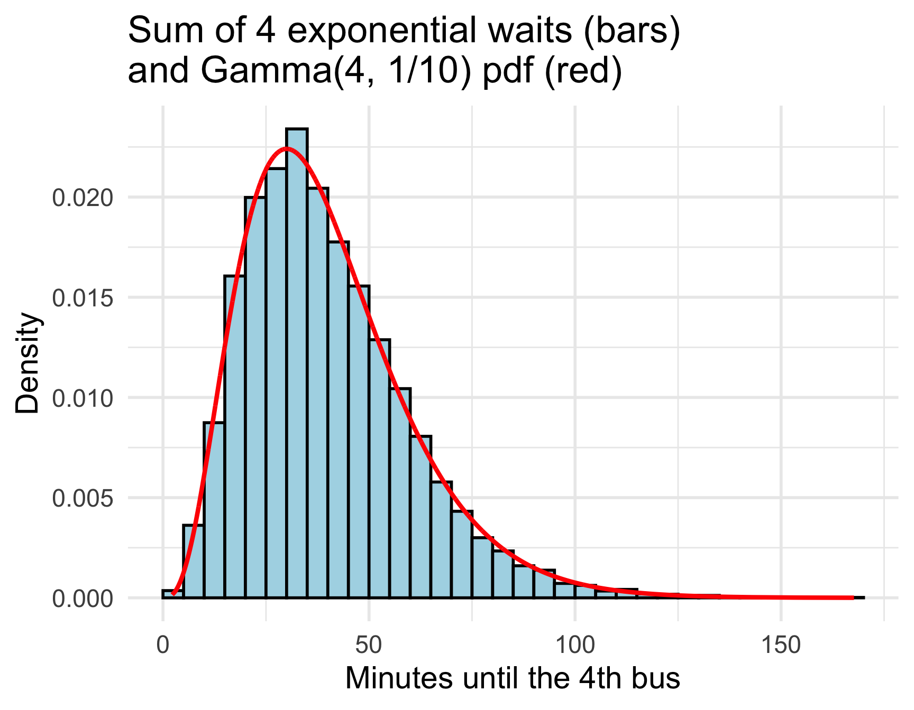
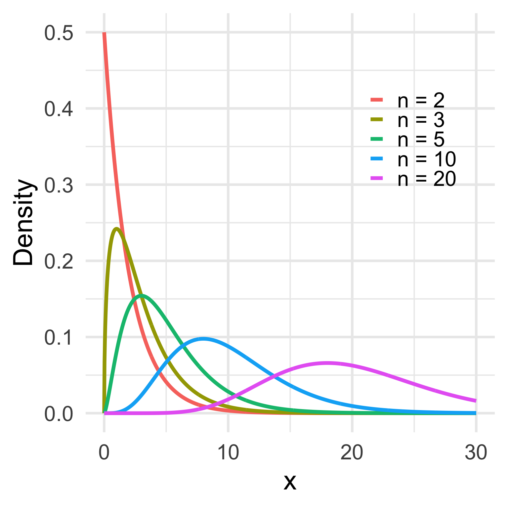
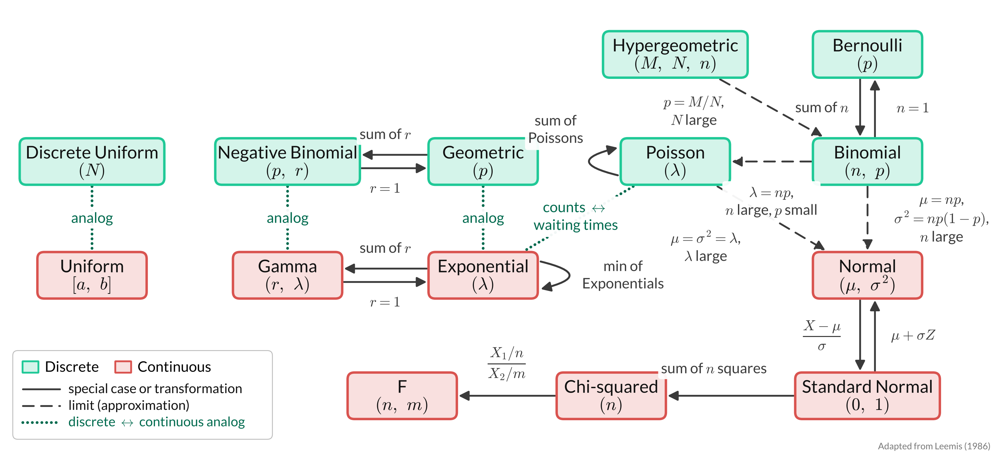

Lesson 13: Some Important Continuous RVs
2026-11-09
Learning Objectives
- Distinguish between Uniform, Exponential, Gamma, and Normal distributions when reading a word problem.
- Identify the variable and the parameters in a word problem, and state what the variable and parameters mean.
- Use the formulas for the pdf/CDF, expected value, and variance to answer questions and find probabilities.
Where are we?

Continuous uniform RVs
Properties of continuous uniform RVs
Scenario: Events are equally likely to happen anywhere or anytime in an interval of values
Shorthand: \(X \sim \text{U}[a,b]\)
\(X\)
\(X\) = a value in the interval \([a, b]\), where every value is equally likely
\[f_X(x) = \dfrac{1}{b-a}, \text{ for }a \leq x \leq b\]
CDF
\[ F_X(x) = \int_a^x f_X(s)\,ds = \left\{ \begin{array}{ll} 0 & \quad x<a \quad \\ \dfrac{x-a}{b-a} & \quad a \leq x \leq b\quad \\ 1 & \quad x>b \quad \end{array} \right. \]
\(\text{E}(X)\)
\[\text{E}(X) = \int_a^b x f_X(x)\,dx = \dfrac{a+b}{2}\]
\(\text{Var}(X)\)
\[\text{Var}(X) = \dfrac{(b-a)^2}{12}\]
Identifying continuous uniform RV from word problems
Look for some indication that all events are equally likely
- Could also say “uniformly distributed”
Look for an interval
Time example: Customer in your store will approach the cash register in next 30 minutes. Approaching the register throughout the 30 minutes is equally likely.
Length example: You have a 12 inch string that you need to cut. You are equally likely to cut anywhere on the string.
Different than the discrete uniform
Discrete usually includes a countable number of events that are equally likely
Continuous is not countable
- Exact time and length can be measured with infinite decimal places
Uniform distribution: R commands
R commands with their input and output:
| R code | What does it return? | What do we use it for? |
|---|---|---|
runif() |
returns sample of random variables with specified uniform distribution | Simulate a Uniform RV |
dunif() |
returns density \(f_X(x)\) at a certain value | \(f_X(x)\): the height of the pdf, not a probability |
punif() |
returns cumulative probability of getting a certain value or less | \(P(X \leq x)\) (or \(P(X > x)\) if we add lower.tail = FALSE) |
qunif() |
returns value corresponding to desired quantile | Inverse CDF: we give it a probability \(p\) and it returns the value \(t\) where \(P(X \leq t) = p\) |
- Parameters:
min\(= a\) andmax\(= b\)
Arrival times
Example 1
People arrive at equally likely times between 10 am and 11 am. Let \(X\) = minutes after 10 am so \(X \sim \text{U}[0, 60]\)
What is the probability that someone arrives at 10:30 am or earlier?
Find the time \(t\) where the probability of arriving at \(t\) or earlier is 0.35.
What is the probability that someone arrives between 10:14 and 10:16 am?
a. \(P(X \leq 30)\)
- 1
-
punif()is the CDF, \(F_X(30) = P(X \leq 30)\).minandmaxare \(a\) and \(b\).
[1] 0.5
b. Find \(t\) with \(P(X \leq t) = 0.35\)
c. \(P(14 \leq X \leq 16)\)
Arrival times: simulate it
Example 1
Simulate 10,000 arrival times and answer parts a, b, and c.
- 1
- Set the random seed once, so we get the same simulation every time.
- 2
-
Save the number of simulations as
reps, so it is easy to change later. - 3
- One row per simulated person.
- 4
-
runif()draws one arrival time for every row.n()is the number of rows, andminandmaxare \(a = 0\) and \(b = 60\).
- 1
- One row of summaries for the 10,000 simulated arrival times.
- 2
- Part a: the proportion of arrivals at 30 minutes or earlier, which estimates \(P(X \leq 30) = 0.5\).
- 3
-
Part b:
quantile(X, 0.35)finds the value with 35% of the simulated times below it. It is the simulation version ofqunif(). Exact: \(t = 21\). - 4
-
Part c:
&means “and”:TRUEonly when the arrival is after 14 and before 16 minutes. Exact: \(\frac{2}{60} \approx 0.0333\).
# A tibble: 1 × 3
prob_a t_b prob_c
<dbl> <dbl> <dbl>
1 0.497 21.5 0.0319Exponential RVs
Properties of exponential RVs
Scenario: Modeling the time until the next (first) event
Continuous analog to the discrete geometric distribution!
Shorthand: \(X \sim \text{Exp}(\lambda)\)
- \(\lambda\) = the rate: average number of events (successes) per unit of time
\(X\)
\(X\) = time until the next (first) event
\[f_X(x) = \lambda e^{-\lambda x}\text{ for } x>0, \lambda>0\]
CDF
\[ F_X(x) = \left\{ \begin{array}{ll} 0 & \quad x<0 \quad \\ 1 - e^{-\lambda x} & \quad x\geq0 \\ \end{array} \right. \]
\(\text{E}(X)\)
\[\text{E}(X) = \dfrac{1}{\lambda}\]
\(\text{Var}(X)\)
\[\text{Var}(X) = \dfrac{1}{\lambda^2}\]
Memoryless Property
If \(b>0\),
\[P(X > a +b | X> a) = P(X > b)\]
This can be interpreted as:
If you have waited \(a\) seconds (or any other measure of time) without a success
Then the probability that you have to wait \(b\) more seconds is the same as the probability of waiting \(b\) seconds initially.
Identifying exponential RV from word problems
Look for time between events/successes
Look for a rate of the events over time period
How does it differ from the geometric distribution?
Geometric is number of trials until first success
Exponential is time until first success
Relation to discrete distributions
- Relationship to Geometric: Exponential is the continuous analog to the Geometric distribution
- Relationship to Poisson: When the time between arrivals is exponential, the number of arrivals in a fixed time interval is Poisson with the mean \(\lambda\)
Minimum of independent exponential RVs
Theorem 1
If \(X_1, X_2, \ldots, X_n\) are independent with \(X_i \sim \text{Exp}(\lambda_i)\), then the first of the arrival times, \[M = \min(X_1, X_2, \ldots, X_n) \sim \text{Exp}(\lambda_1 + \lambda_2 + \cdots + \lambda_n)\]
The rates add: waiting for the first of several independent events is like waiting for one event with the combined rate
For example, if bus A comes every 10 minutes on average (\(\lambda_1 = 1/10\)) and bus B every 15 minutes (\(\lambda_2 = 1/15\)), the wait for whichever bus comes first is \(\text{Exp}(1/10 + 1/15) = \text{Exp}(1/6)\): 6 minutes on average
We can show this with the CDF method (Lesson 14)
Exponential distribution: R commands
R commands with their input and output:
| R code | What does it return? | What do we use it for? |
|---|---|---|
rexp() |
returns sample of random variables with specified exponential distribution | Simulate a Exponential RV |
dexp() |
returns density \(f_X(x)\) at a certain value | \(f_X(x)\): the height of the pdf, not a probability |
pexp() |
returns cumulative probability of getting a certain value or less | \(P(X \leq x)\) (or \(P(X > x)\) if we add lower.tail = FALSE) |
qexp() |
returns value corresponding to desired quantile | Inverse CDF: we give it a probability \(p\) and it returns the value \(t\) where \(P(X \leq t) = p\) |
- Parameters:
rate\(= \lambda\)
Waiting for the bus
Example 2
We are at the bus stop, measuring the time until our bus arrives. The bus comes every 10 minutes on average, so \(X \sim \text{Exp}(\lambda = 1/10)\), with \(X\) in minutes.
What is the probability that the bus arrives in the next 5 minutes?
Find the time \(t\) where the probability of the bus arriving at \(t\) or earlier is 0.35.
What is the probability that the bus arrives between 3 and 5 minutes?
a. \(P(X \leq 5)\)
- 1
-
pexp()is the CDF.rateis \(\lambda\): 1 bus per 10 minutes.
[1] 0.3934693
b. Find \(t\) with \(P(X \leq t) = 0.35\)
- 1
-
qexp()is the inverse CDF: it finds \(t\) with \(P(X \leq t) = 0.35\).
[1] 4.307829
c. \(P(3 \leq X \leq 5)\)
Waiting for the bus: simulate it
Example 2
Simulate 10,000 waits for the bus and answer parts a, b, and c.
- 1
- One row of summaries for the 10,000 simulated waits.
- 2
- Part a: estimates \(P(X \leq 5) = 1 - e^{-0.5} \approx 0.3935\).
- 3
-
Part b: the simulation version of
qexp(). Exact: \(t = -10\ln(0.65) \approx 4.31\). - 4
- Part c: estimates \(P(3 \leq X \leq 5) = e^{-0.3} - e^{-0.5} \approx 0.1343\).
# A tibble: 1 × 3
prob_a t_b prob_c
<dbl> <dbl> <dbl>
1 0.391 4.32 0.134Memoryless property: check with a simulation
- We’ve already waited \(a = 3\) minutes. Is the chance of waiting \(b = 5\) more minutes the same as \(P(X > 5)\)?
Exact: both are \(e^{-5/10} \approx 0.6065\)
- At home: try other values of \(a\), like
mean(X > 15) / mean(X > 10)
Gamma RVs
Properties of gamma RVs
- Scenario: Modeling the time until the \(r^{th}\) event.
- Continuous analog to the Negative Binomial distribution
- Shorthand: \(X \sim \text{Gamma}(r, \lambda)\) or \(X \sim \text{Gamma}(\alpha, \beta)\)
- Same as the sum of \(r\) independent waiting times: \(X = \sum_{i=1}^r Y_i\), where \(Y_i \sim \text{Exp}(\lambda)\)
\(X\)
\(X\) = time until the \(r^{th}\) event
\[f_X(x) = \dfrac{\lambda^r}{\Gamma(r)}x^{r-1} e^{-\lambda x}\text{ for } x>0, \lambda>0\]
where \(\Gamma(r) = (r-1)!\)
CDF
\[ F_X(x) = \left\{ \begin{array}{ll} 0 & \quad x<0 \quad \\ 1 - e^{-\lambda x}\displaystyle\sum_{j=0}^{r-1}\dfrac{(\lambda x)^j}{j!} & \quad x\geq0 \\ \end{array} \right. \]
\(\text{E}(X)\)
\[\text{E}(X) = \dfrac{r}{\lambda}\]
\(\text{Var}(X)\)
\[\text{Var}(X) = \dfrac{r}{\lambda^2}\]
Common to see \(\alpha = r\) and \(\beta = 1/\lambda\)
Identifying gamma RV from word problems
Gamma distribution with \(r=1\) is same as exponential (both continuous)
- Just like Negative Binomial with \(r=1\) is same as the geometric distribution (both discrete)
Similar to exponential
- Look for time between or until events/successes
- BUT now we are measuring time until more than 1 success
- Look for a rate of the events over time period
- Look for time between or until events/successes
Gamma distribution: R commands
R commands with their input and output:
| R code | What does it return? | What do we use it for? |
|---|---|---|
rgamma() |
returns sample of random variables with specified gamma distribution | Simulate a Gamma RV |
dgamma() |
returns density \(f_X(x)\) at a certain value | \(f_X(x)\): the height of the pdf, not a probability |
pgamma() |
returns cumulative probability of getting a certain value or less | \(P(X \leq x)\) (or \(P(X > x)\) if we add lower.tail = FALSE) |
qgamma() |
returns value corresponding to desired quantile | Inverse CDF: we give it a probability \(p\) and it returns the value \(t\) where \(P(X \leq t) = p\) |
Parameters:
shape\(= r\) andrate\(= \lambda\) (orscale\(= \beta = 1/\lambda\))Another helpful site with R code: https://rpubs.com/mpfoley73/459051
Waiting for 4 buses
Example 3
We are at the bus stop, measuring the time until 4 buses arrive. The bus comes every 10 minutes on average, so \(X \sim \text{Gamma}(r = 4, \lambda = 1/10)\), with \(X\) in minutes.
What is the probability that the 4 buses arrive in the next 50 minutes?
Find the time \(t\) where the probability of the 4 buses arriving at \(t\) or earlier is 0.35.
What is the probability that the 4 buses arrive between 30 and 50 minutes?
a. \(P(X \leq 50)\)
- 1
-
shapeis \(r\) andrateis \(\lambda\). Same answer withscale = 10in place ofrate = 1/10, sincescaleis \(\beta = 1/\lambda\).
[1] 0.7349741
b. Find \(t\) with \(P(X \leq t) = 0.35\)
- 1
-
qgamma()is the inverse CDF, likequnif()andqexp(). There is no closed form for \(t\), so R does the work.
[1] 29.87645
c. \(P(30 \leq X \leq 50)\)
Waiting for 4 buses: simulate it
Example 3
Simulate 10,000 waits for 4 buses and answer parts a, b, and c.
- 1
-
Save the number of buses as
n_buses, so it is easy to change later. - 2
-
One row per simulated wait for 4 buses.
repsis still 10,000. - 3
-
rgamma()draws the time until the 4th bus for every row:shapeis \(r\) andrateis \(\lambda\).
- 1
- One row of summaries for the 10,000 simulated waits.
- 2
-
Part a: compare with
pgamma()\(\approx 0.7350\). - 3
-
Part b: the simulation version of
qgamma(). Exact: \(t \approx 29.88\). - 4
- Part c: compare with \(\approx 0.3822\).
# A tibble: 1 × 3
prob_a t_b prob_c
<dbl> <dbl> <dbl>
1 0.739 29.8 0.384Remarks
The parameter \(r\) in a Gamma(\(r\),\(\lambda\)) distribution does NOT need to be a positive integer
- \(r\) is usually a positive integer
When \(r\) is a positive integer, the distribution is sometimes called an Erlang(\(r\),\(\lambda\)) distribution
- Erlang is a gamma with a whole-number \(r\)
When \(r\) is any positive real number, we have a general gamma distribution that is usually instead parameterized by \(\alpha>0\) and \(\beta>0\), where:
\(\alpha = \text{shape parameter}\) : same as \(r\), the total number of events we must witness
- In Example 3: 4 buses to wait for (
shape = 4)
- In Example 3: 4 buses to wait for (
\(\beta = \text{scale parameter}\) : same as \(1/\lambda\), one over the rate parameter
In Example 3: 1 bus per 10 minutes, so
rate = 1/10orscale = 10In R:
rate = 1/scale
Gamma as a sum of exponentials: simulate
- Set up
- Is the gamma really a sum of exponentials? Wait for 4 buses, one after another, with each wait \(Y_i \sim \text{Exp}(1/10)\). Is the total wait like the \(X \sim \text{Gamma}(4, 1/10)\) from Example 3?
- Simulate
- 1
-
One row for every bus in every simulation, each with its own wait from
rexp().n_busesis still 4 from Example 3. - 2
-
For each simulation, add up the 4 waits. If the gamma really is a sum of exponentials,
Yshould behave likeX.
Gamma as a sum of exponentials: summarize
- Summarize
- 1
- One row of summaries of the 10,000 sums of 4 exponential waits.
- 2
- Compare with \(\text{E}(X) = r/\lambda = 40\) and \(SD(X) = \sqrt{r/\lambda^2} = 20\).
- 3
- Compare with Example 3, part a: \(P(X \leq 50) \approx 0.7350\). The sums behave like the gamma!
# A tibble: 1 × 3
average std_dev prob_a
<dbl> <dbl> <dbl>
1 39.9 19.9 0.737- Sensitivity analysis
- At home: change to
n_buses <- 1. Does \(Y\) look like \(\text{Exp}(1/10)\), with average 10?
Plot code
ggplot(sum_sims, aes(x = Y)) +
geom_histogram(aes(y = after_stat(density)),
binwidth = 5, boundary = 0,
color = "black", fill = "lightblue") +
geom_line(aes(y = dgamma(Y, rate = 1/10, shape = n_buses)),
color = "red", linewidth = 1.5) +
labs(title = "Sum of 4 exponential waits (bars)\nand Gamma(4, 1/10) pdf (red)",
x = "Minutes until the 4th bus",
y = "Density") +
theme_minimal(base_size = 22)- 4
- Start with the 10,000 sums of 4 exponential waits, \(Y\).
- 5
- A histogram scaled so the total area is 1, like a pdf (Lesson 8).
- 6
-
The exact pdf:
dgamma()gives \(f_X(x)\). It is a density, not \(P(X = x)\). - 7
- Add a title and axis labels, with a clean theme and larger text.

Normal RVs
Properties of Normal RVs
No scenario description here because the Normal distribution is so universal
- Central Limit Theorem (Lesson 17) makes it applicable to many types of events
Shorthand: \(X \sim \text{Normal}(\mu, \sigma^2)\)
- The second parameter is the variance \(\sigma^2\), but R’s
*norm()functions usesd\(= \sigma\)
- The second parameter is the variance \(\sigma^2\), but R’s
\[f_X(x) = \dfrac{1}{\sqrt{2\pi \sigma^2}}e^{-(x-\mu)^2/(2\sigma^2)}\]
for \(-\infty < x < \infty\)
\(\text{E}(X)\)
\[\text{E}(X) = \mu\]
\(\text{Var}(X)\)
\[\text{Var}(X) = \sigma^2 \qquad \text{SD}(X) = \sigma\]
- No closed-form CDF: we use R (or a table) to find probabilities
Normal distribution: R commands
R commands with their input and output:
| R code | What does it return? | What do we use it for? |
|---|---|---|
rnorm() |
returns sample of random variables with specified normal distribution | Simulate a Normal RV |
dnorm() |
returns density \(f_X(x)\) at a certain value | \(f_X(x)\): the height of the pdf, not a probability |
pnorm() |
returns cumulative probability of getting a certain value or less | \(P(X \leq x)\) (or \(P(X > x)\) if we add lower.tail = FALSE) |
qnorm() |
returns value corresponding to desired quantile | Inverse CDF: we give it a probability \(p\) and it returns the value \(t\) where \(P(X \leq t) = p\) |
- Parameters:
mean\(= \mu\) andsd\(= \sigma\) (the standard deviation, not the variance \(\sigma^2\))
High temperature
Example 4
We are measuring the high temperature today. The average high temperature on this day across many, many years is 50 degrees with a standard deviation of 4 degrees, so \(X \sim \text{Normal}(50, 4^2)\).
What is the probability that the high temperature is below 45 degrees?
Find the temperature \(t\) where the probability that the temperature is at \(t\) or lower is 0.35.
What is the probability that the temperature is between 45 and 50 degrees?
a. \(P(X < 45)\)
- 1
-
pnorm()is the CDF. Notesd = 4, not the variance 16. For a continuous RV, \(P(X < 45) = P(X \leq 45)\).
[1] 0.1056498
b. Find \(t\) with \(P(X \leq t) = 0.35\)
- 1
-
qnorm()is the inverse CDF: it finds \(t\) with \(P(X \leq t) = 0.35\).
[1] 48.45872
c. \(P(45 \leq X \leq 50)\)
High temperature: simulate it
Example 4
Simulate 10,000 high temperatures and answer parts a, b, and c.
- 1
- One row of summaries for the 10,000 simulated temperatures.
- 2
-
Part a: compare with
pnorm()\(\approx 0.1056\). - 3
-
Part b: the simulation version of
qnorm(). Exact: \(t \approx 48.46\). - 4
- Part c: compare with \(\approx 0.3944\).
# A tibble: 1 × 3
prob_a t_b prob_c
<dbl> <dbl> <dbl>
1 0.104 48.5 0.389Standard Normal Distribution
\[ Z \sim \text{Normal}(\mu = 0, \sigma^2 = 1)\]
Used to be more helpful when computing was not as advanced
Use tables of the standard normal
You can convert any normal distribution to a standard normal through transformation
For \(X \sim \text{Normal}(\mu_X, \sigma_X^2)\): \(Z = \dfrac{X - \mu_X}{\sigma_X}\)
Comes from \(X = \sigma_X Z + \mu_X\)
Since \(\sigma_X\) and \(\mu_X\) are constants, then \(E(X) = \sigma_X E(Z) + \mu_X = \mu_X\) and \(SD(X) = \sigma_X\)
Chi-squared distribution
If \(Z \sim \text{Normal}(0,1)\), then \(X = Z^2\) has a Chi-squared distribution with 1 degree of freedom
If \(Z_1, Z_2, \ldots, Z_n\) are independent standard normal RVs, then
\[X = \sum_{i=1}^n Z_i^2\]
has a Chi-squared distribution with \(n\) degrees of freedom
- Shorthand: \(X \sim \chi^2_{(n)}\)
- \(X\) is always positive (a sum of squares)
A ratio of two independent chi-squared RVs, each divided by its degrees of freedom, has an F distribution: \(\dfrac{\chi^2_{(n)}/n}{\chi^2_{(m)}/m} \sim F_{n,m}\)

Relationships between distributions

Lesson 13 Slides